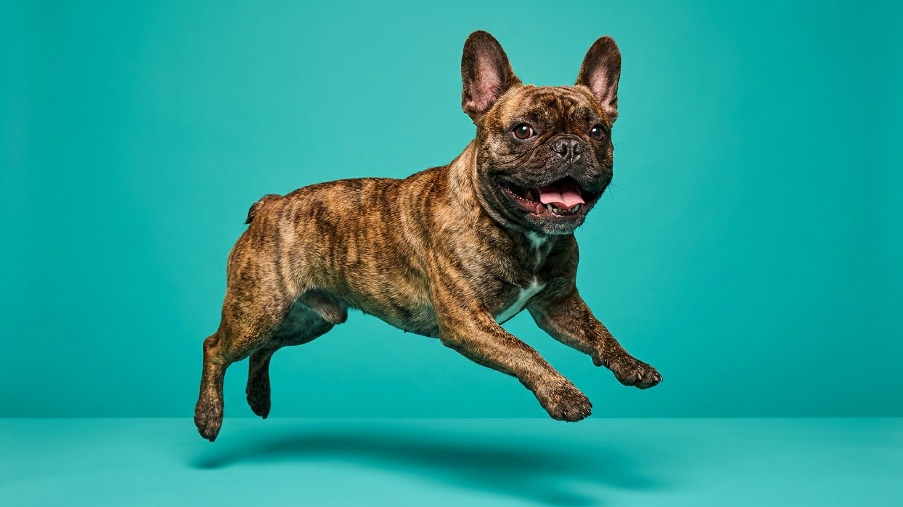

Ветеринар говорит: «Питомец набирает вес, пересмотрите питание». Хозяин возражает: «Я даю строго по норме». Оба правы — просто норма считается без лакомств. Кусочек сыра за команду, ломтик курицы со стола, пара магазинных угощений к вечеру — и питомец съедает на 20–40% больше своей суточной нормы. Правило 10% объясняет, почему это происходит и как это остановить без лишения питомца радости.
🐾 Питомец ведёт себя странно?
AnimaLife расшифрует поведение кошки и собаки и подскажет, что делать. Попробуйте бесплатно прямо в мессенджере.
Хозяева часто воспринимают «лакомства» только как магазинные угощения в ярких пакетиках. Но всё это тоже входит в счёт:
Все эти источники суммируются. Ни один из них сам по себе не выглядит опасным — именно поэтому перебор так легко не замечать.
Правило простое: все лакомства за день — не более 10% от суточной нормы калорий питомца. Остальные 90% должны приходить на основной рацион — сбалансированный корм или рацион, одобренный ветеринаром.
Как прикинуть без весов. Возьмите суточную порцию корма — именно ту, что указана на упаковке для веса вашего питомца. Отложите 10% от этого объёма в сторону. Всё, что вы даёте сверх основного кормления, в сумме не должно превышать этот отложенный кусочек. Для кошки весом 4 кг это буквально 3–5 граммов калорийного угощения или небольшая горстка сухого корма.
Лакомства нужны — они мотивируют при обучении, укрепляют контакт и просто делают питомца довольным. Задача не убрать их, а сделать менее калорийными:
Три сценария, которые встречаются чаще всего:
Простое решение: завести на холодильнике стикер с суточным лимитом лакомств в граммах. Когда контейнер с угощениями на день пуст — всё, лимит исчерпан. Это работает для всей семьи сразу.
🐾 Здоровье питомца под контролем
AI-ветеринар, дневник здоровья и персональные советы для вашего питомца — установите AnimaLife бесплатно.
🐾 Понравился разбор?
Подпишитесь на канал — каждый день разбираем по одному тревожному симптому у кошек и собак: что в пределах нормы, а когда пора к врачу. Подпишитесь, чтобы не пропустить разбор, который может спасти здоровье вашего питомца.